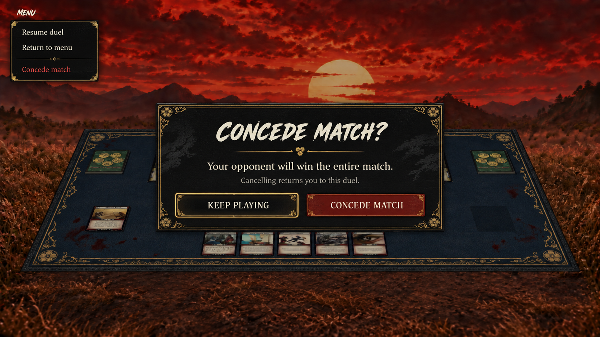
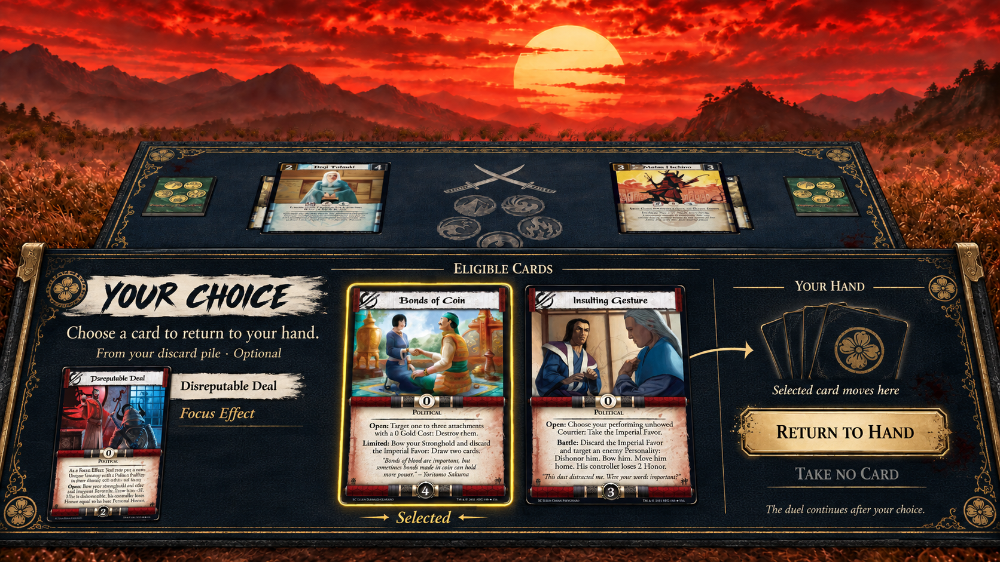
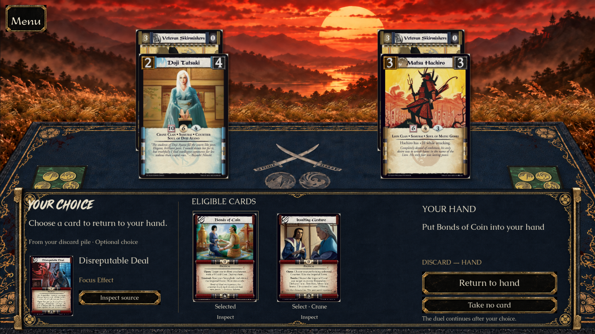
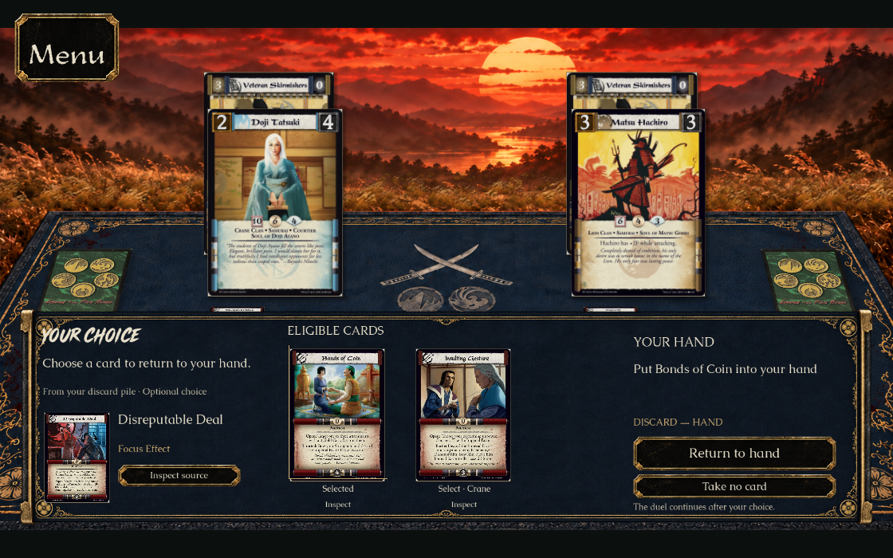
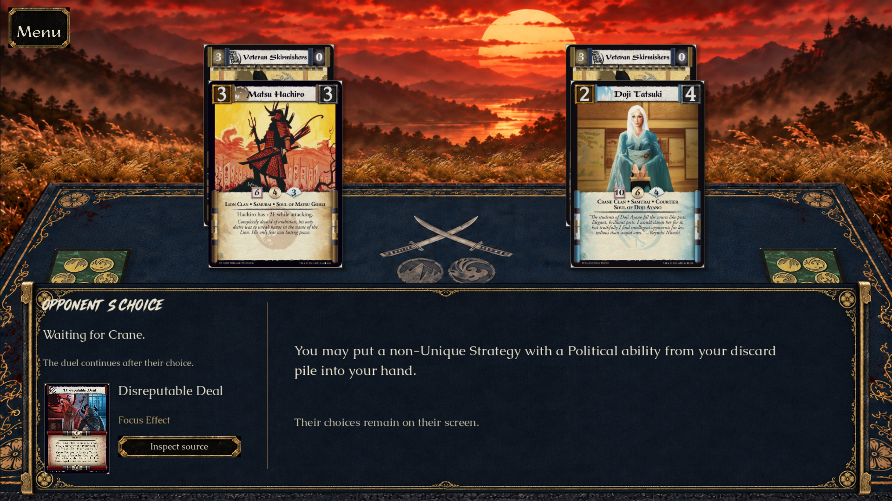

PR #466 · issue #448. Centered concession (1A); integrated Focus Effect tray (2B), separate source and choices (2A), quiet selection outline (2C). Native captures come from actual mouse/keyboard regression runs.
The flat ImageGen frame derivatives preserve navy/black surfaces and proportionate gold ornaments. Live text, original card scans and existing game buttons remain native. This preserves the current upright duelist camera: it is not a pixel-identical recreation of the flatter concept camera. The selected action explicitly says DISCARD → HAND; an ambiguous arrow from an unselected card is not used.
Button-corner correction: native before/after. The Concede and compact-choice captures below include the transparency correction.




